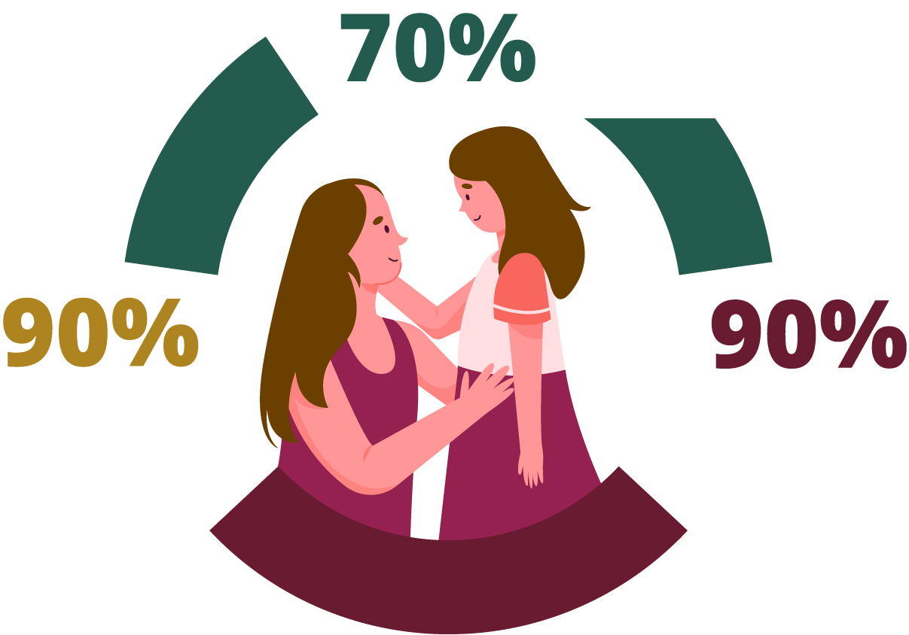

3. Estrategia mundial para la eliminación del Cáncer del Cuello Uterino
La Estrategia mundial para acelerar la eliminación del cáncer del cuello uterino como problema de salud pública, propuesta oficialmente por la OMS en noviembre 2020, plantea alcanzar las metas 90-70-90 para 2030, de modo que los países miembros se encuentren orientados hacia la eliminación del cáncer del cuello uterino, mediante:

de las mujeres examinadas mediante una prueba de alta precisión antes de los 35 años y una vez más, antes de los 45.
de las niñas totalmente vacunadas contra VPH-AR antes de cumplir 15 años.
de las mujeres con diagnóstico de CCU, quienes reciben tratamiento (90% con lesiones precancerosas y con cánceres invasivos).
Página 5 de 9